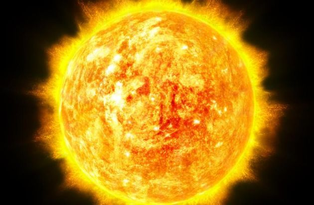

|  |
|
La estrella que se encuentra en el centro de nuestro sistema solar. 1. Tiempo y rotación del Sol. El Sol no gira como una bola sólida, dice la agencia espacial, ya que su superficie está compuesta por un gas caliente cargado eléctricamente llamado plasma. Esta sustancia gira a diferentes velocidades y en diferentes partes del cuerpo celeste. El Sol también completa una rotación cada 25 días terrestres en su región del Ecuador y, en sus polos, la estrella gira alrededor de su propio eje una vez cada 36 días terrestres. 2. El sol no tiene luna A diferencia de la Tierra, el Sol no tiene Luna. Está orbitado por ocho planetas (incluida la Tierra), más otros cinco planetas enanos, miles de asteroides y unos tres billones de cometas y cuerpos helados. 3. El sol tiene diferentes temperaturas El Sol tiene temperaturas altas, pero fluctúan en sus diferentes zonas. La parte más caliente está en el núcleo, donde el calor alcanza los 27 millones de grados Fahrenheit (o unos 15 millones de grados Celsius). La superficie, llamada fotosfera, es relativamente "fría", alcanzando los 10 000 grados Fahrenheit (alrededor de 5500 grados Celsius). Mientras que la atmósfera exterior del Sol, conocida como corona, se calienta más cuanto más se aleja de la superficie. Esta área alcanza hasta 3.5 millones de grados Fahrenheit (o alrededor de 2 millones de grados Celsius). 4. Tamaño y distancia A pesar de ser considerado un gigante del sistema planetario, según la NASA el Sol es una estrella de tamaño mediano con un radio de unos 700 mil kilómetros. Sin embargo, hay estrellas que son mucho más grandes. Aun así, comparado con la Tierra, el Sol es enorme: se necesitarían más de 330 000 Tierras para igualar la masa del Sol. En términos de distancia, está a unos 150 millones de kilómetros de la Tierra. 5. Larga órbita en la Vía Láctea El Sol está en el centro del Sistema Solar, que se desplaza a una velocidad media de 720 000 kilómetros por hora, dice la agencia espacial. A pesar de esta gran velocidad, la estrella tarda unos 230 millones de años en realizar un viaje completo alrededor de la Vía Láctea. |